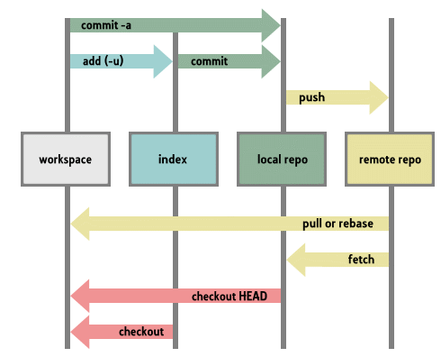
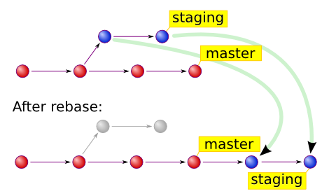
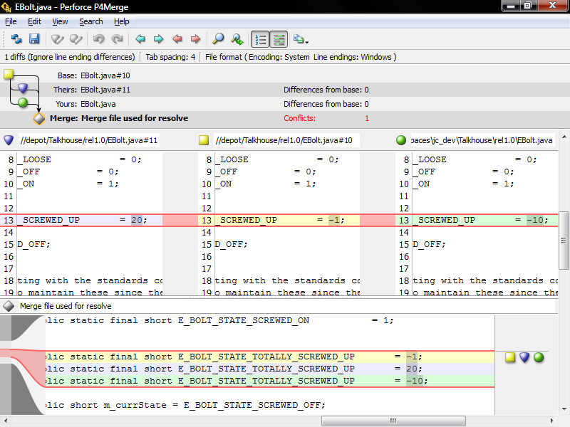

Get Good At Git
Distributed Version Control
Created by Jeff Sallans
My Background
4+ Years of experience
2 Enterprise Git Environments
Trained small teams
Why Git?
Distributed vs Centralized
- More Commits
- Better Merges
- Less restrictive
Download Git
Basic Commands
Init
Creates a git repositoryAdd
Moves changes to stagingCommit
Creates a record of the diffStructure
Basic Commands
Status
Visualize current staging detailsLog
Visualize commit historyGUI to start
Setup Demo
Github Terms
Fork
Copy a repository content but not the settingsPull Request
Merging a change from a forked repository back into the original repoFork Demo
Github Pages Demo
Add gh-pages branch
Push to Github
Go to <username>.github.io/<repository name>
Common Scenarios
Abort
git reset --hard
Removes all changes back to the last commit WARNING: You can loose uncommited changes this way. Try to use git stash insteadSeparate Code State
git checkout [-b] <branch name>
Moves branches b flag creates a new branchgit merge <branch name>
Combine changes of two branchesDetermine if code at a commit works
git checkout -b <commit hash>
Makes a new branch of the code only up to the commitClean Up My Commit History
git rebase [-i]
i squash flag will combined commits into a single commitSearch Commits
git log --pretty=oneline | grep <search regex>
Enterprise Workflows
Branching technique - Git Flow
Large code management
Used at GreenPath
Isolate new features
Good for release organization
Read More HereMerge technique - Rebase and Cherry Pick
Rebase
Rebase and cherry-pick instead of merge
Rebase commits into one commit
Cherry-pick commit into master
Read More HereMerge vs Rebase

Why
Keep a cleaner history
Prevents auto merge bugs
Easier to revisit versions
Merge Conflict
How to resolve it
Manually remove metadata
Add conflict files
Commit
Demo

Other Scenarios
Find When A Bug Was Introduced
bisect
Binary search interface for checking out commitsRemove developing code for a demo
git stash save <save message>
Stores the diff as metadata in the .git foldergit stash apply
Last save stash is added back to work spaceFind a commit for a specific line of code
git blame <filename>
Undo all the changes of a commit
git revert <commit hash>